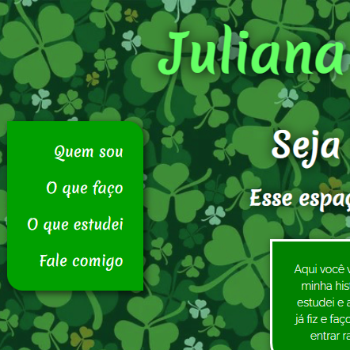

Juliana Jesus
Perfil profissinal
Organização, determinação e adaptação, sempre foram habilidades que me guiaram. Estou sempre em busca de novas experiências e aprecio o conhecimento compartilhado de forma orgânica. Sou comprometida, dinâmica e proativa, apresento grande facilidade de aprendizado e estou sempre disposta a colaborar para a evolução do meu trabalho e da equipe.
Atuações no mercado de trabalho
WebDev Full-Stack
GitHub JulianaJesus93
Repositório onde dispobilizarei os projetos que for desenvolvendo ao longo da minha caminhada na programação.
Soul Juh Jesus

Instagram @souljuhjesus
Uma marca onde reúno meus trabalhos artesanais, em sua maioria letterings, desenhos abstratos e placas decorativas.
Em desenvolvimento por Juliana Jesus
Setembro 2022